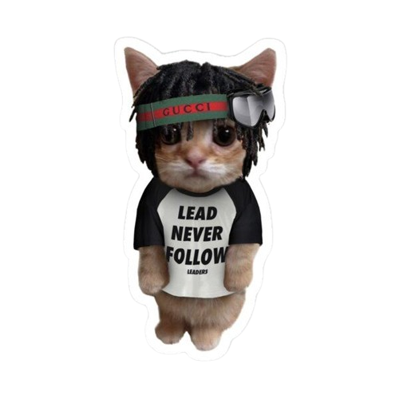
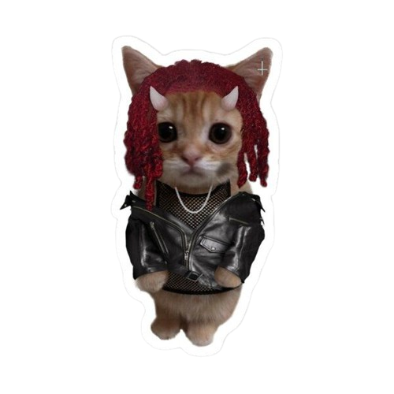
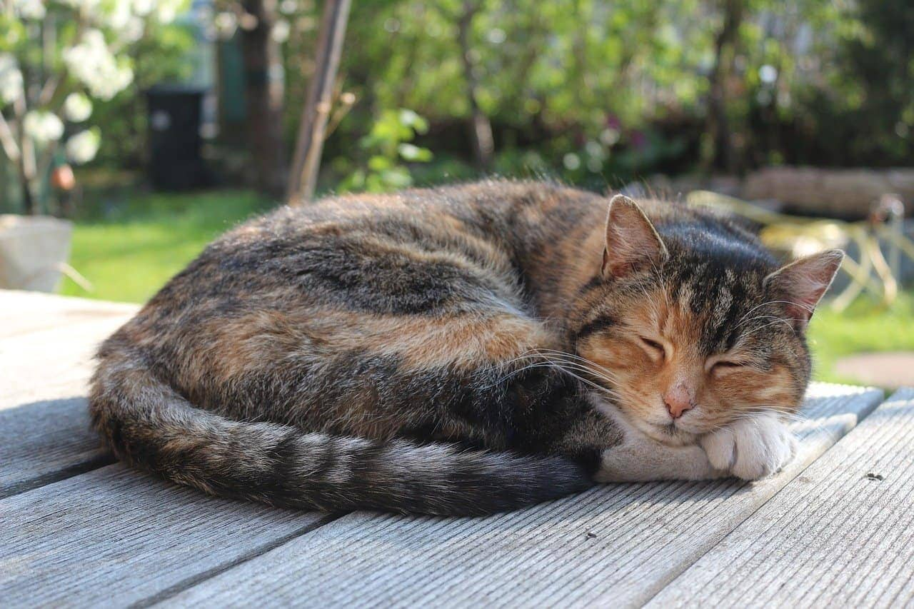
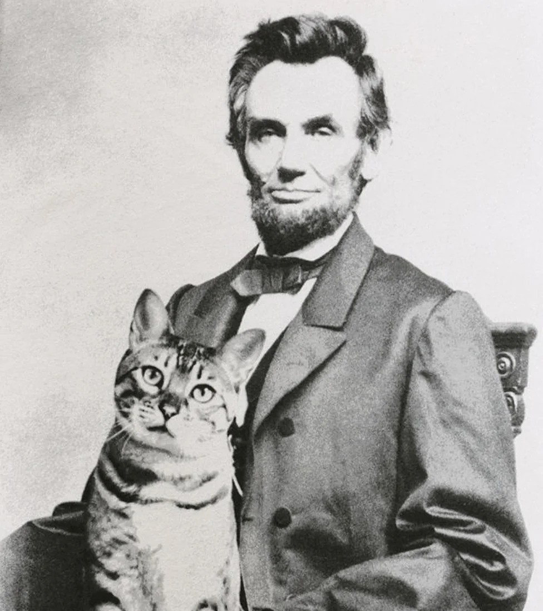
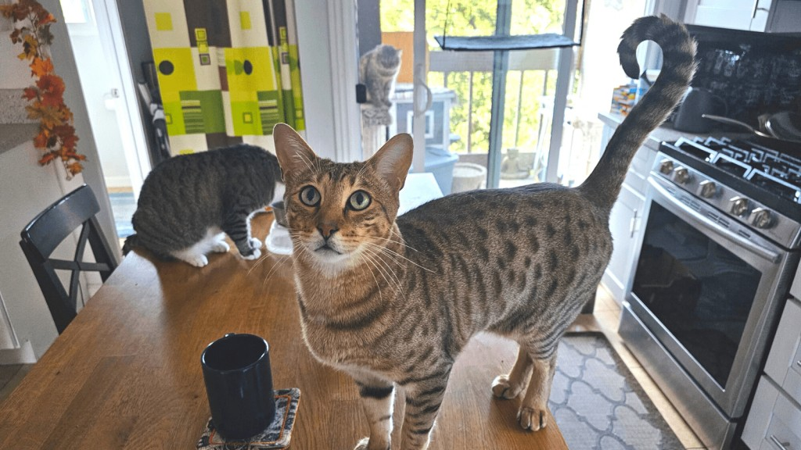
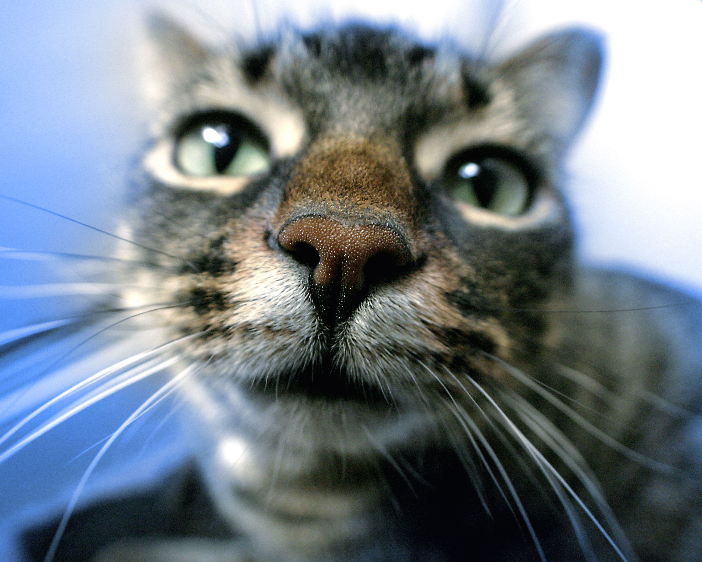
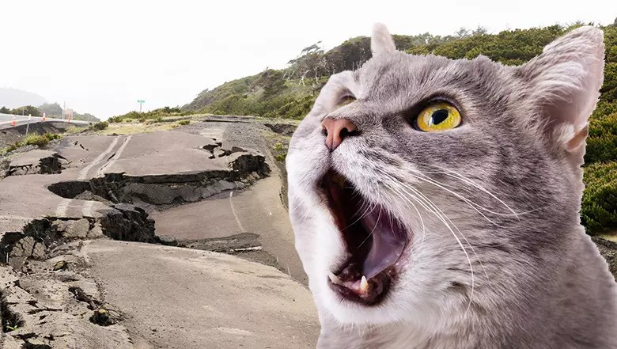

Érdekességek
- 1. A macskák többsége 5 km/h-val gyorsabban fut, mint Usian Bolt a legjobb formájában. Az olimpiai bajnok sprinternek 45 km/h a csúcssebessége.
- 2. Egy macska az életének csak a harmadát tölti ébren, a többit átalussza.

- 3. A macskák nem látnak közvetlenül az orruk elé. Ezért nem veszik észre, ha az étel pont előttük van.
- 4. Abraham Lincoln négy macskát tartott a Fehér Házban.

- 5. Ha csak kicsit harap meg, az a szeretet jele. Abban az esetben, ha gyengéden simogatod és közben néha kicsit odakap, azt jelenti, hogy elismeri a simogatásod.
- 6. Ha a cica farka kérdőjel alakot vesz fel, akkor biztos lehetsz benne, hogy épp játékos kedvében van. Ha folyamatosan néz téged és körülugrál, azt jelzi, hogy játszani szeretne veled.

- 7. Ők is tudnak izzadni. Igaz, ők nem így hűtik magukat, a mancsuk ennek ellenére igenis képes verejtékezni, ha melegük van vagy idegesek.
- 8. A cicák orra épp oly egyedi, mással össze nem téveszthető mintázattal rendelkezik, mint ember ujjlenyomata.

- 9. A macskák előre megérzik a földrengéseket.

- 10. Képesek magasságuk ötszörösére ugrani a cicusok.